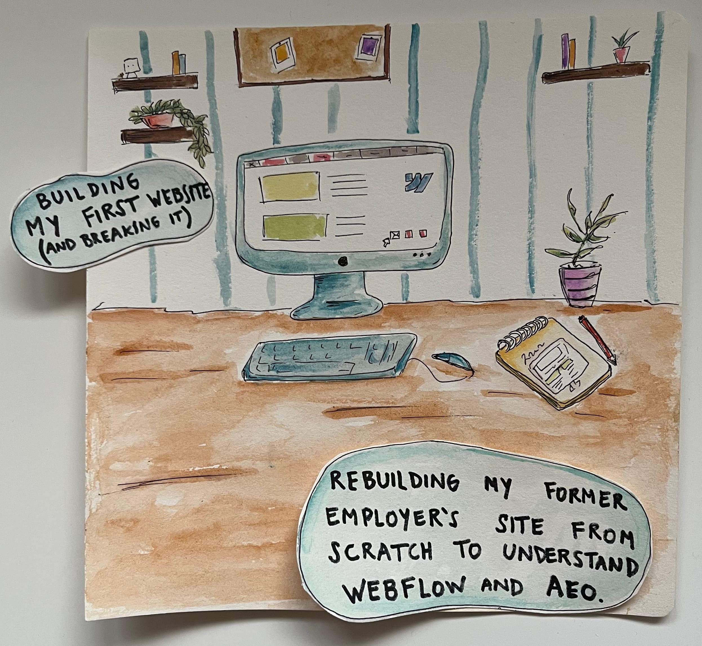
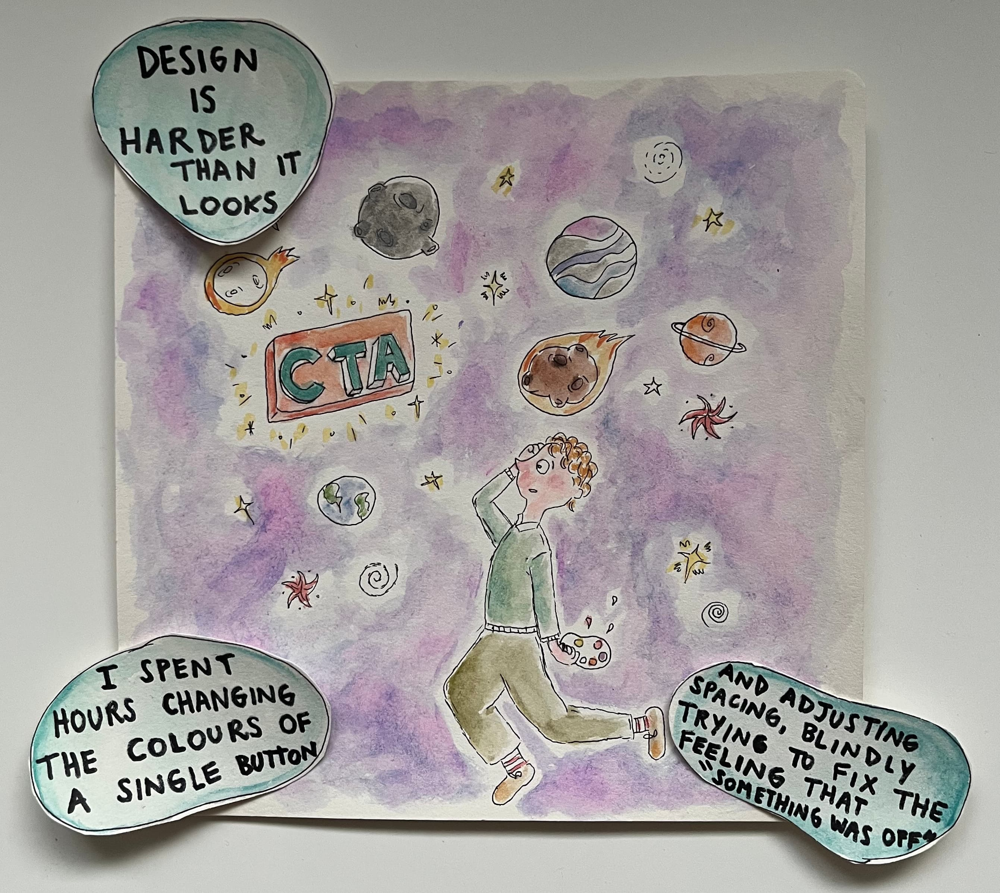
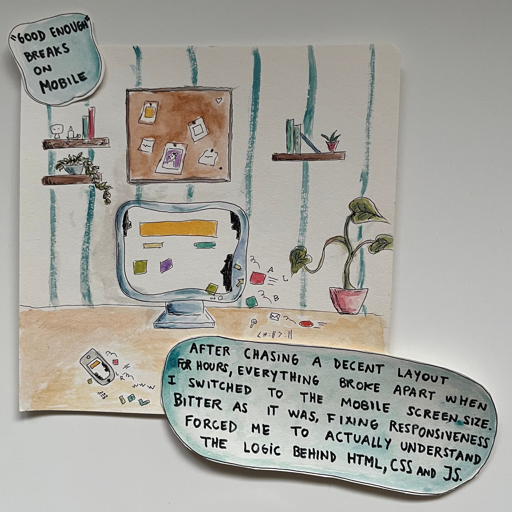
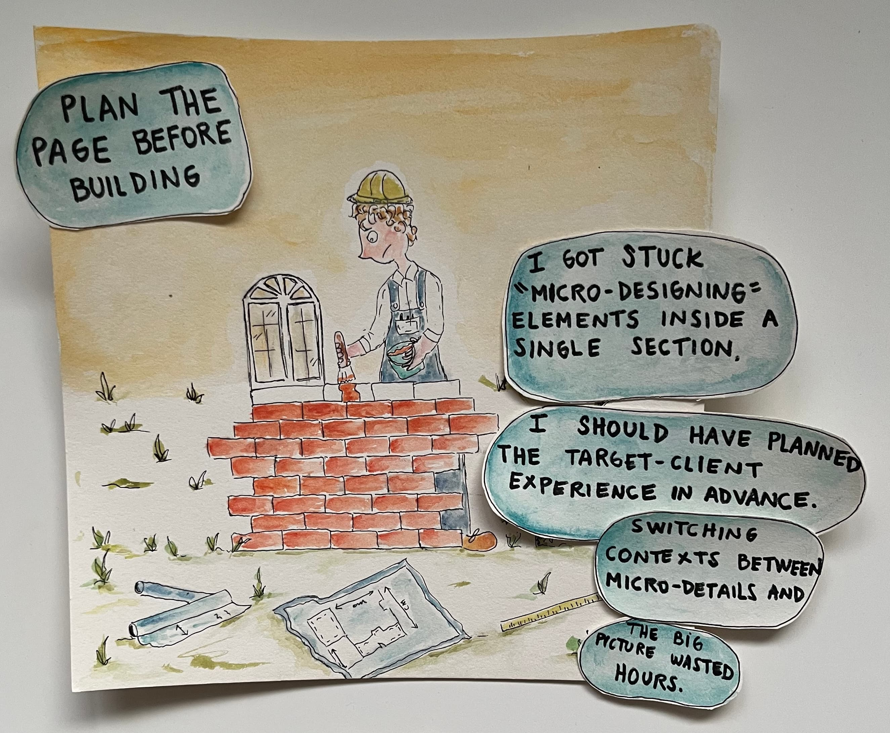
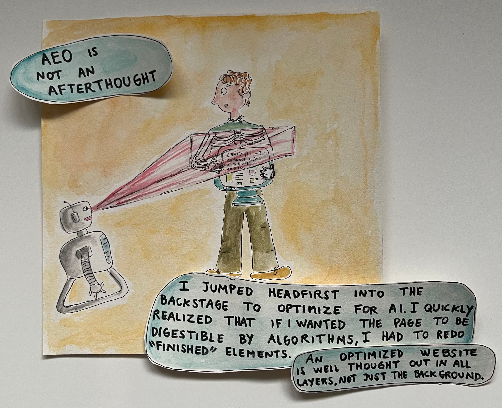
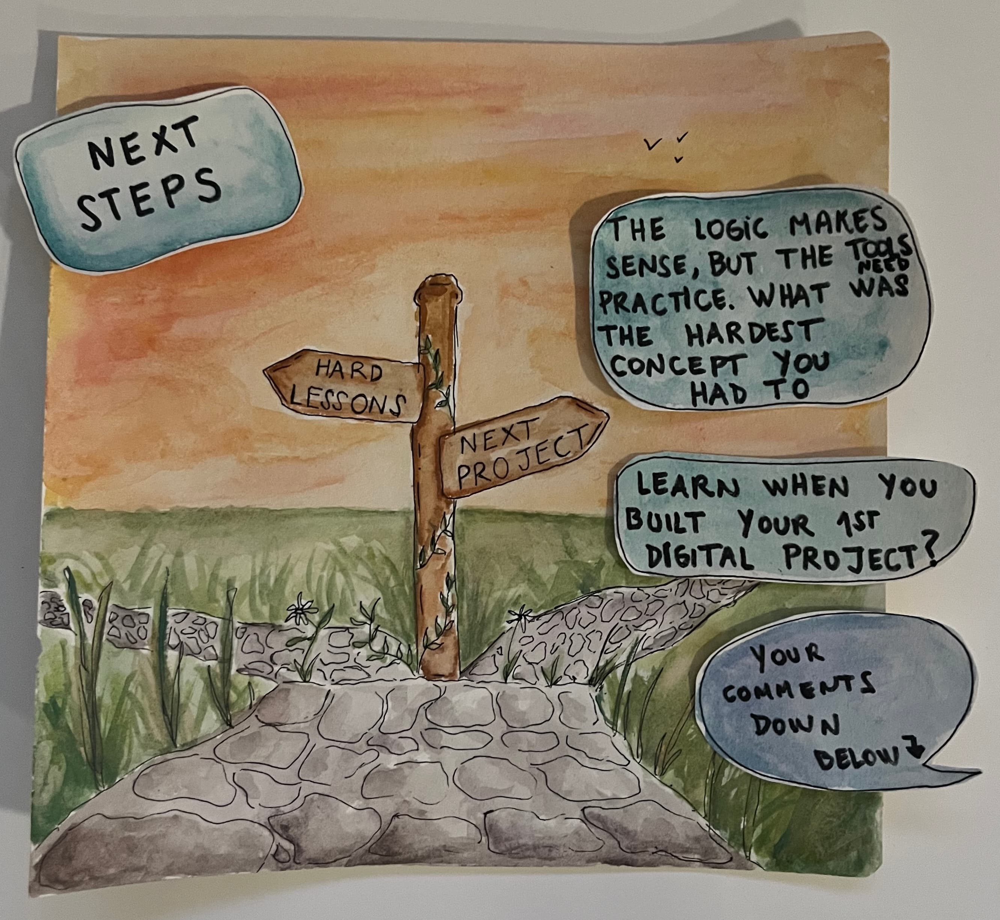

Drawing the unseen.
Drawing the unseen.






In this collaboration, I partnered with Jean Campos, a Web Developer and Content Creator on LinkedIn, to visually document his evolution through emerging technologies. I utilized a signature handmade illustration style to translate complex technical shifts into approachable, cartoonish narratives.
Description of your second project goes here.
Description of your third project.
Typically, a custom piece takes 1-2 weeks depending on complexity.
Yes! All professional collaborations include a tailored agreement.